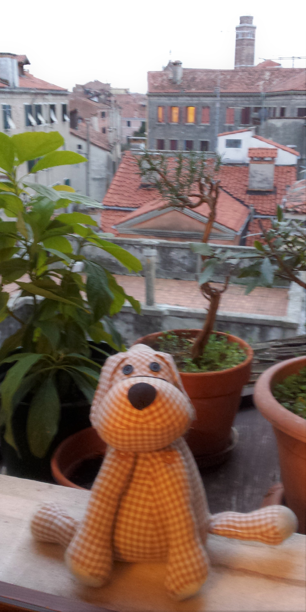
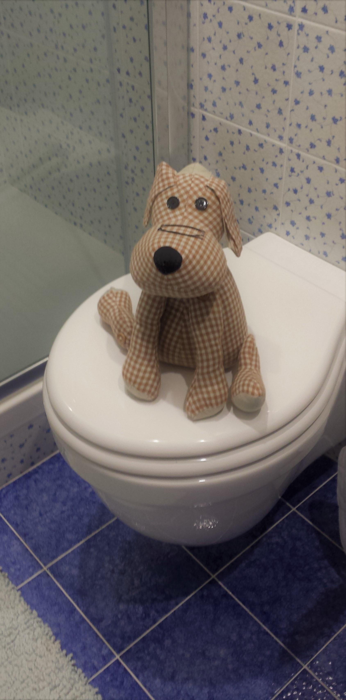

This is a rather large and complicated Web page. It tells a simple story about my floppy-eared friend Floppy, who is from Italy. Floppy is a dog, I think.
Here are two pictures of Floppy, which I took when I was in Italy in December, plus a picture of me, which Floppy took:
 
Without your proxy, you should be able to view this page just fine.
With your proxy, this page should look a bit different, with all mentions of my friend Floppy from Italy being changed into something else. The page should still be formatted properly.